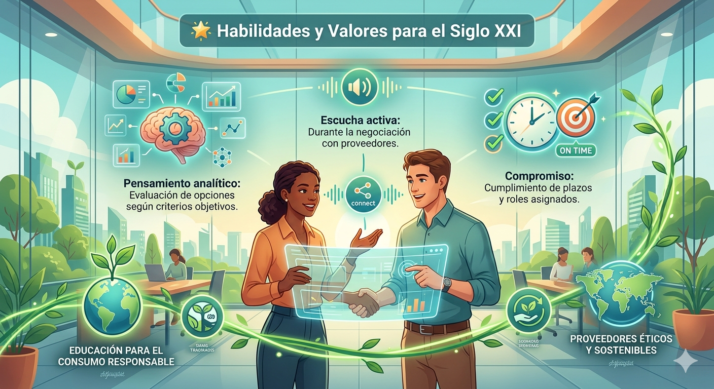

BLOQUE 1: El Marco Curricular
La evaluación de este reto es formativa y continua, integrando autoevaluación y coevaluación conforme a la programación del módulo. No solo valoramos el producto final, sino el proceso de toma de decisiones, la capacidad de análisis y el dominio de las herramientas digitales necesarias en el sector del catering.
Tabla 1: Mapa de Relación: eXeLearning vs. Currículo Oficial
Actividad en eXeLearning |
Relación con el Currículo (RA / CE) |
¿Por qué? |
| Investigación (Padlet/Symbaloo) | RA2 (CE c) / RA1 (CE a) | Buscan información sobre empresas tipo (proveedores) y obtienen datos para las soluciones. |
| Informe Técnico (Canva/PDF) | RA2 (CE e, i) | Realizan el estudio de viabilidad técnica y elaboran la documentación de diseño. |
| Hoja de Ruta (Genially) | RA3 (CE a, g, h) | Aquí es donde temporizan secuencias y prevén imprevistos (Protocolo GRIT). |
| Gala de Presentación | RA5 (CE a, b, c) | Transmiten información clara y ordenada usando medios informáticos. |
Tabla 2: Criterios de Calificación y Pesos
Criterio de Evaluación |
Qué se observa |
Peso en la Nota |
| Propuesta Técnica | Selección ética de proveedores y análisis de costes. | 40% |
| Competencia Digital | Uso eficiente de herramientas y seguridad en la red. | 30% |
| Soft Skills | Liderazgo, trabajo en equipo y responsabilidad. | 20% |
| Autoevaluación | Reflexión sobre el aprendizaje alcanzado. | 10% |
BLOQUE 2: Habilidades y Valores
🌟 Habilidades y Valores para el Siglo XXI
En este reto, tu crecimiento profesional va más allá de los datos técnicos. Evaluaremos tus Soft Skills asociadas:
- Pensamiento analítico: Evaluación de opciones según criterios objetivos.
- Escucha activa: Durante la negociación con proveedores.
- Compromiso: Cumplimiento de plazos y roles asignados.
Además, trabajaremos de forma transversal la Educación para el Consumo Responsable mediante la selección de proveedores éticos y sostenibles.
"Elige el nivel de aumento y el tamaño de la lupa. La imagen se verá ampliada al pasar sobre ella con el ratón".

BLOQUE 3: "Tu Brújula para el Éxito: Instrumentos de Evaluación"
Para que este reto de 'Sabores del Mundo' sea una experiencia de aprendizaje real y transparente, utilizaremos diversos instrumentos de valoración diseñados para orientar vuestro trabajo.
En este apartado encontraréis las rúbricas detalladas que definen los niveles de logro para vuestro informe técnico y vuestra presentación oral. Recordad que, siguiendo la metodología de este reto, aplicaremos una evaluación formativa. Esto significa que, además de la valoración del docente (heteroevaluación), vuestra propia reflexión a través de la autoevaluación y la valoración crítica y constructiva de vuestros compañeros (coevaluación) serán piezas clave para el crecimiento de todo el equipo.
Utilizad estas Tablas y Rúbricas de Evaluación como una guía desde el primer minuto para aseguraros de que vuestra estrategia de aprovisionamiento cumple con los más altos estándares de calidad, sostenibilidad y ética profesional.
BLOQUE 4: Rúbrica de Producto Final (Contenido Técnico)
Basada en los RA1, RA2 y RA3 descritos en la identificación del Reto Profesional 5: Análisis de la estrategia de aprovisionamiento.
| 2 Satisfactorio | 1 Mejorable | 0,5 Suficiente | 0,0 Insuficiente | |
|---|---|---|---|---|
| A. Análisis de Proveedores (T1) | Identifica con precisión más de 3 proveedores reales de Vietnam, Brasil y Rumanía, evaluando exhaustivamente reputación, variedad y precios. (2,0) | Identifica 3 proveedores de los países indicados con un análisis correcto pero menos detallado en precios o plazos. (1,0) | La búsqueda de proveedores es incompleta o no se centra en los países requeridos. (0,5) | No realiza la investigación de proveedores internacionales. (0,0) |
| B. Informe Comparativo (T1)Primer Borrador | Elabora un informe profesional que sintetiza con maestría puntos fuertes y débiles de cada alternativa de suministro. (2,0) | Resume de forma clara las fortalezas y debilidades de los proveedores encontrados. (1,0) | El informe es vago o no distingue claramente entre los beneficios y riesgos de cada proveedor. (0,5) | No entrega el informe comparativo. (0,0) |
| C. Estrategia de Aprovisionamiento (T2)Construcción de Párrafos | Define y justifica de forma brillante la elección de proveedor único o múltiple, alineándola con los objetivos de calidad de Jimena. (2,0) | Elige una estrategia y explica las ventajas y riesgos de forma lógica para el negocio. (1,0) | La estrategia elegida no está bien justificada o ignora los riesgos de suministro. (0,5) | No define ninguna estrategia de aprovisionamiento (0,0) |
| D. Viabilidad y DocumentaciónRedacción | El estudio de viabilidad y la documentación administrativa (facturas/pedidos) son impecables y acordes al sector cátering. (2,0) | Presenta la documentación necesaria y un análisis de viabilidad técnica correcto pero estándar. (1,0) | La documentación administrativa es incompleta, con errores en los formatos o procedimientos (0,5) | No aporta documentación administrativa ni estudio de viabilidad. (0,0) |
| E. Reflexión Crítica (Cuestiones)Calidad de Información | Respuestas profundas sobre las dificultades de investigación y la gestión de monopolios en el mercado. (2,0) | Responde correctamente a las cuestiones finales reflexionando sobre el aprendizaje del proceso. (1,0) | Respuestas breves que no profundizan en los retos de la negociación o búsqueda de información. (0,5) | No responde a las cuestiones finales. (0,0) |
- Actividad
- Nombre
- Fecha
- Puntuación
- Notas
- Reiniciar
- Imprimir
- Aplicar
- Ventana nueva